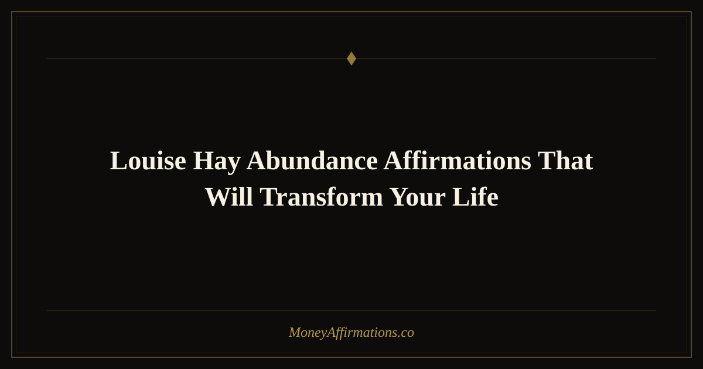

Louise Hay Abundance Affirmations That Will Transform Your Life

Note: The affirmations below are original statements inspired by Louise Hay's philosophy and approach — they are not direct quotes from her work. We encourage you to explore her books, especially You Can Heal Your Life, for her exact words.
Louise Hay taught something that most financial gurus never mention: the root of money problems is almost never about money. It's about self-worth, childhood programming, and the quiet belief that you are not quite enough to deserve prosperity. Her approach combined radical self-love with present-tense affirmations, dissolving the emotional blocks that sit upstream of financial struggle. The 20 affirmations below are crafted in that spirit — gentle, body-aware, and rooted in the idea that loving yourself is the first and most important investment you can make.
What Are Louise Hay-Inspired Abundance Affirmations?
Louise Hay's method centers on the mirror technique — speaking affirmations directly to your own reflection — and on the belief that every outer condition mirrors an inner state. Abundance affirmations in her tradition don't just focus on money arriving; they focus on healing the self-concept that has been pushing money away. They tend to be warm, forgiving, and body-inclusive, acknowledging that financial stress lives in the body as much as the mind. When you repeat these statements, you are not just changing thoughts — you are soothing a nervous system that has been bracing against scarcity for years.
20 Louise Hay-Inspired Abundance Affirmations
- I deeply and completely love and accept myself, and I deserve a life of overflowing abundance.
- Life supports me in every way, and money flows to me from expected and unexpected sources.
- I release every childhood belief that said I was not worthy of wealth, and I welcome my new prosperous reality.
- My body relaxes into abundance, and every cell in me knows that I am safe to receive.
- I forgive myself for every past financial mistake, and I move forward with wisdom and grace.
- The universe is endlessly generous, and there is more than enough prosperity for everyone, including me.
- I love myself enough to ask for what I am worth, and I receive it joyfully.
- I am open and receptive to all the good and abundance the universe has to offer.
- Money is my friend, and I welcome it into my life with warmth and appreciation.
- I release the need to struggle with money, and I embrace the ease of financial flow.
- Every dollar I spend returns to me multiplied, because I live in a universe of infinite supply.
- I trust life to provide for me abundantly, and I show up each day expecting miracles.
- I am at peace with my past around money, and I am joyfully creating a new financial story.
- My self-love is the foundation of my wealth — the more I cherish myself, the more abundance I attract.
- I give myself permission to be rich, to be generous, and to live without financial fear.
- The world becomes more beautiful when I am financially free, and I allow that freedom fully.
- I am enough. I have enough. I attract enough, and more than enough, in every area of my life.
- I release all inherited beliefs about money being scarce or difficult, and I claim my birthright of abundance.
- My heart is open to prosperity, and my hands are ready to receive all the blessings coming my way.
- I nourish myself with loving thoughts about money, and my financial life blossoms in response.
How to Use These Affirmations Daily
Louise Hay's signature practice was the mirror technique: stand in front of a mirror, look yourself directly in the eyes, and speak each affirmation aloud with warmth — as if you are talking to a beloved child. This method is more powerful than it sounds because eye contact with yourself activates self-referential processing in the brain, making the statements more personally meaningful and harder for your ego to dismiss. Choose three to five of these affirmations each morning. Breathe slowly as you speak them. If emotion arises — sadness, resistance, even tears — that is the old programming releasing. Stay with it gently. In the evening, revisit one affirmation before sleep, letting it be the last conscious thought your mind processes before drifting off, when subconscious absorption is highest.
Tips to Make Them Work Faster
- Do the mirror work. Yes, it feels awkward at first — that discomfort is precisely where the healing happens.
- Soften before you start. Place a hand on your heart and take three deep breaths before speaking. This activates the parasympathetic state where new beliefs take root most easily.
- Write them in a dedicated journal. Handwriting engages more of the brain than typing and creates a physical record of your intention that you can return to.
- Add your name. Personalizing — "I, [your name], deeply love and accept myself" — increases emotional impact significantly.
- Be compassionate with resistance. Rather than fighting inner skepticism, greet it: "I see you, old belief. Thank you for trying to protect me. I choose something new now."
Frequently Asked Questions
Why does self-love matter for financial abundance?
Louise Hay observed that people who feel unworthy unconsciously sabotage financial opportunities — turning down raises they deserve, undercharging, overspending to self-soothe, or dismissing windfalls as flukes. Self-love removes the internal ceiling on how much good you allow yourself to receive. When you genuinely believe you are worth prosperity, you start making decisions that align with that belief — negotiating better, investing in yourself, accepting help — and the outer world responds accordingly.
What is the mirror technique and how do I do it correctly?
Stand in front of any mirror, make soft eye contact with your own reflection, and speak your chosen affirmations aloud — slowly, warmly, as if speaking to someone you love. The "correctly" part is simply consistency and kindness. Don't rush through the words. Let them land. If you find it unbearable to look at yourself, that itself is important information about where healing is needed — start with just a few seconds of eye contact and build from there.
Can I use these affirmations alongside other financial practices?
Absolutely — and you should. These affirmations are mindset tools, not replacements for budgeting, saving, investing, or earning. Think of them as clearing the internal terrain so that practical financial strategies can actually take root and grow. Many people find that once the emotional blocks around money soften, they become far more willing and able to implement the practical steps they already knew but kept avoiding.
Self-love and financial abundance are not separate practices — they are the same practice viewed from different angles. To continue building your abundance mindset with a wider range of affirmations, visit our complete abundance affirmations collection, organized by theme to help you target the specific blocks that matter most to you.